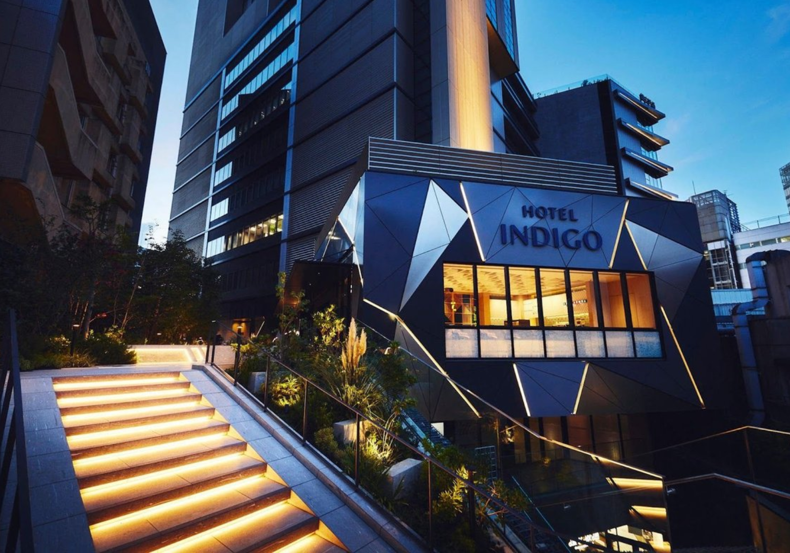
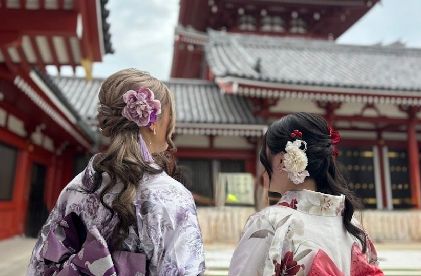
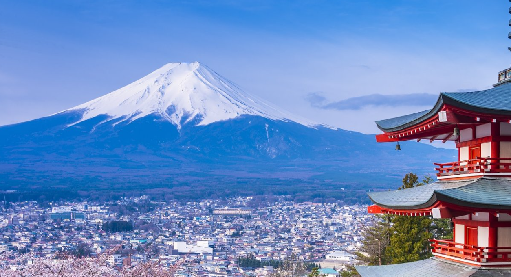

What: My Hobby
One of my favorite hobbies is travelling, and this summer I plan to go to Japan with my family. My 2-week itinerary is focuses on exploring a variety of neighborhoods in Japan, particularly in the Tokyo prefecture.
In order to make the most of my trip, I have arranged my itinerary by grouping locations by proximity and titling each day accordingly to maximaize time efficiency and exploration.
The goal is to balance sightseeing, food, culture, and relaxing exploration throughout the trip to see as much of everything as possible.

A relatively new hotel located in the heart of Shibuya with stunning views.
Who: About Me
Hello! My name is Alana and I am a computer science major at UNC Charlotte who loves to travel. This year, I will be traveling abroad with my family in Japan again, but this time with a focus in Tokyo.
Back in 2007, I lived in Misawa, Aomori with my parents when they were in the military. It was a great experience getting to learn some of the Japanese language firsthand and Japan's cultural customs.
From kimono photoshoots to history-rich temples, everything that Tokyo has to offer made me stay excited about travel, studying Japanese, and planning during my down time.

A kimono rental company in Asakusa that provides professional photography services at Senso-ji temple in Tokyo.
When — Summer 2026
My trip takes place from late July through mid-August. Because my family and I intend to take a day trip to Mt Fuji, these dates were chosen in consideration to Mt Fuji's climbing season, which runs from early July to September.
As for Tokyo, summer evenings are especially great for exploring neighborhoods and trying street food. Many areas also have seasonal events and festivals during this time.
Considering how the weather can be incredibly hot and humid, I aim to curate my itinerary to where the majority of outdoor activities are done in the morning to beat the heat.

Famous for being the tallest volcano in Japan.
Where — Locations in My Itinerary
My itinerary focuses on different neighborhoods in Tokyo along with a day trip to Kamakura. Each place has a unique atmosphere and captivating attractions.
The locations range from busy shopping areas to fascinating historic districts with temples and traditional streets. Below is a table of my most favorite areas to research.
| Location | Type of Area | Main Attractions |
|---|---|---|
| Shibuya | Modern city district | Shibuya Crossing, Street Kart, Shibuya Sky |
| Asakusa | Historic area | Senso-ji Temple, Nakamise Street, Kimono photoshoots |
| Ginza | Luxury shopping district | Tsukiji fish market, Ginza SIX, Uniqlo |
| Yanaka | Old cat-themed Tokyo neighborhood | Cafe Nekoemon, Tori No Iru cafe, Yanaka Street |
| Setagaya | Residential district | Gotokuji temple, Kichijoji, Sangenjaya |
| Kamakura | Day trip from Tokyo | Hokokuji temple, Sasuke Inari shrine, Komachi Street |

Kamakura is a historic coastal town south of Tokyo known for its temples.
How — Planning the Trip
Planning the trip involves researching transportation, attractions, and food locations in order to plan for reservations and lodging. I intend to use Tokyo's subway system to my advantage for cost effeciency.
My outlined trip logistics go as follows:
- keep days 1 & 2 in same area in case of jet lag or flight delays
- place most popular spots on Mon-Thurs/early to avoid weekend upcharges & large crowds
- save majority of shopping for end of each day to avoid carrying stuff around all day
- For Tokyo, daily commutes should be no more than 3 hours
- leave atleast 1 full free day for flexibility
Creating a structured itinerary helps organize the trip so that I can experience a lot one area at a time without feeling rushed.

Tokyo’s trains make it easy to travel between neighborhoods.
Why — Why I Enjoy This Hobby
As a fan of anime and cats, I have always dreamed of revisiting Japan to explore Tokyo! With the price of yen being at an all-time low, there is no better time to start planning than now with family.
Japan offers an incredible city aesthetic, culture, and range of unique activities unheard of in the US, which makes planning the trip especially exciting.
By the time the trip begins, I intend to use jet lag to my advantage to beat the crowds at popular spots like Senso-ji Temple and overall make the best use of my time possible.

Trying authentic Japanese food is one of the things I look forward to most.